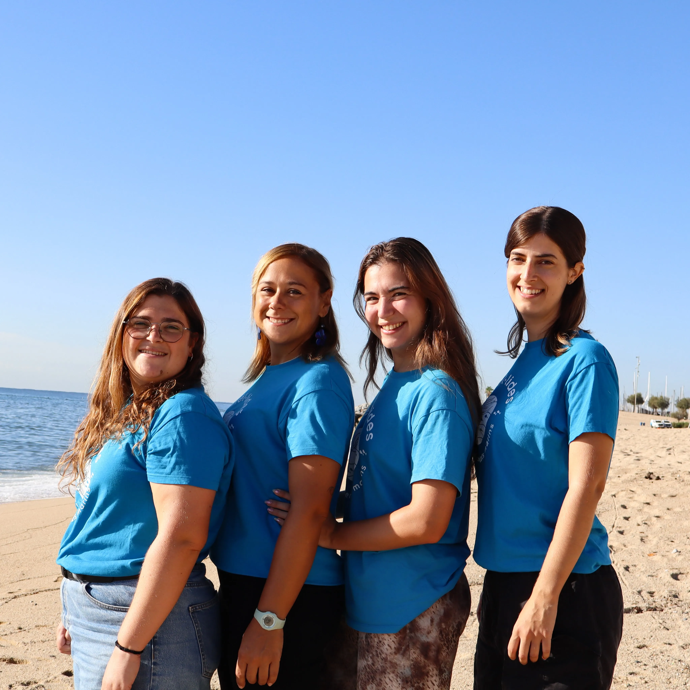
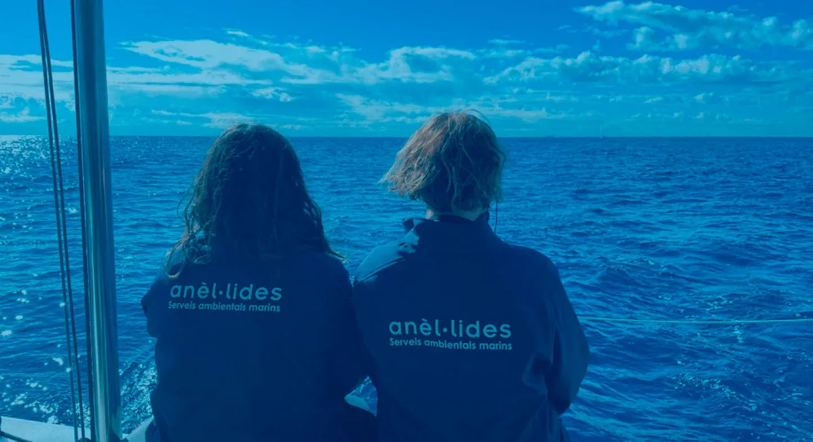
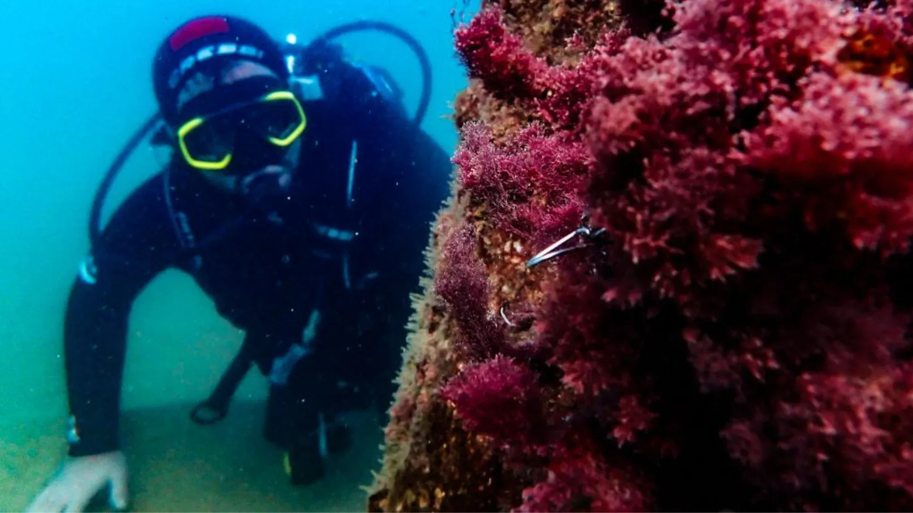
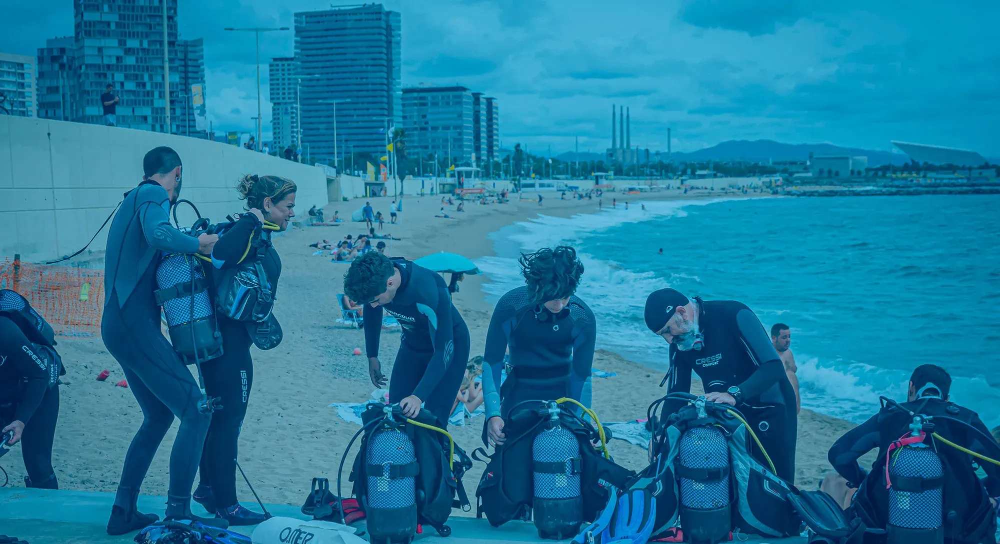
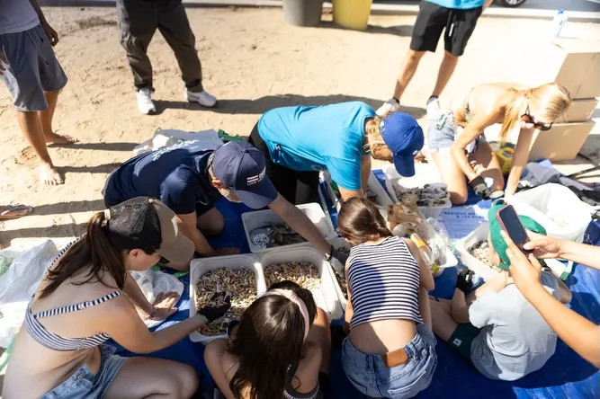

06 · Educación y ciencia ciudadana
Anèl·lides
En contactoPosibilidad de acceso: Según actividad
Anèl·lides sitúa el mar en el centro de la educación ambiental y toma Barcelona como contexto. Combina actividades urbanas, investigación, divulgación, turismo sostenible y ciencia ciudadana.






Contacto
Andrea Comaposada, fundadora. El vínculo comenzó alrededor de la limpieza terrestre y subacuática de Nova Icària durante el Plogging Day.
Por qué interesa
Sus proyectos —UrbamarBio, Posidònia Activa y Save the Seahorses— permiten observar cómo la ciudad entra en relación con ecosistemas que parecen lejanos, aunque están a pocos metros de la costa. Sus actividades ofrecen momentos concretos para fotografiar educación, buceo científico, muestreo y clasificación de residuos.
Próximas actividades
- 29 de octubre, 9:00–12:00 — seguimiento del biotopo de caballitos de mar, playa de Sant Sebastià.
- 31 de octubre, 10:00–12:00 — limpieza de arena y fondo marino en la playa de la Marina, Badalona.
- 26 de noviembre y 30 de diciembre, 9:00–12:00 — nuevas inmersiones de seguimiento de caballitos de mar.